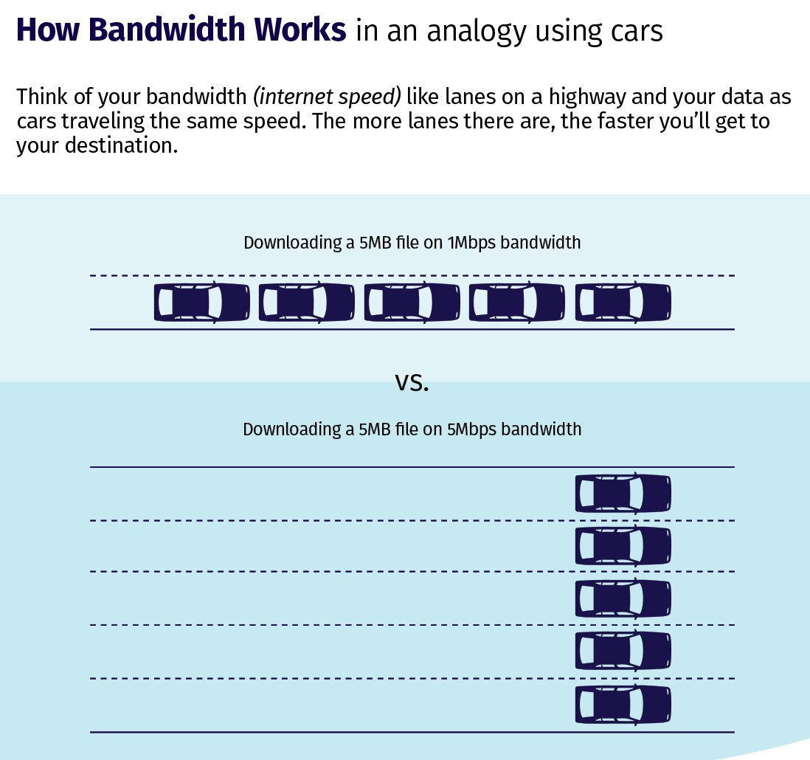
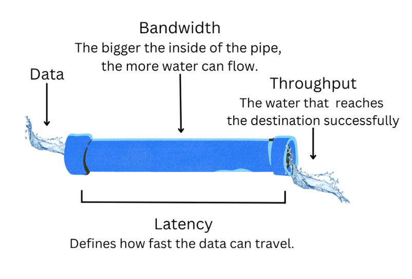
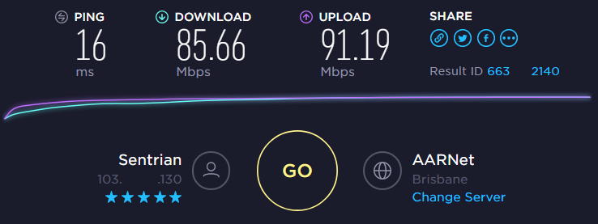
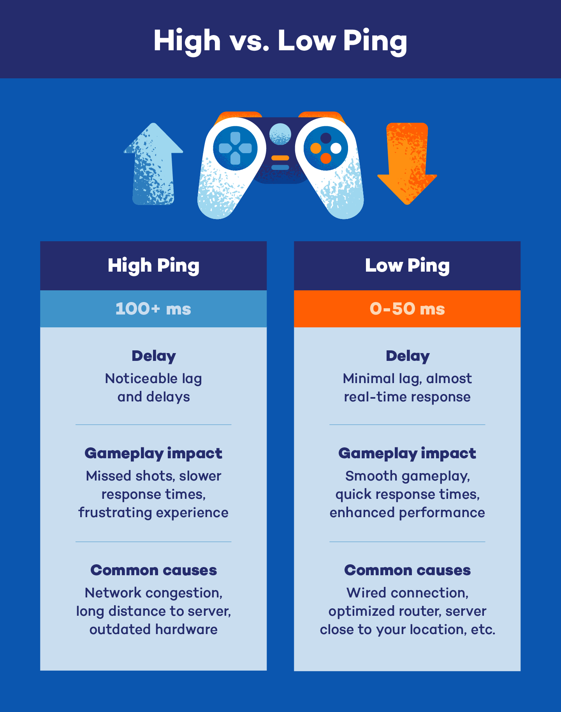
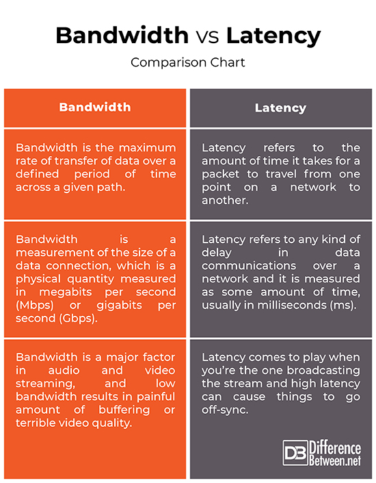

Bandwidth vs Throughput
Bandwidth = Capacity
Throughput = Actual speed
👉 If you remember only this, you’ll already score marks ✅
🛣️ Real-World Analogy (VERY IMPORTANT 💡)
| Real Life | Networking |
|---|---|
| Width of road | Bandwidth |
| Cars actually moving | Throughput |
🛣️ 6-lane highway → High bandwidth
🚦 Traffic jam → Low throughput
📌 Wide road ≠ smooth traffic
📌 High bandwidth ≠ high speed
Bandwidth Analogy (Highway Example)

📶 What is Bandwidth?
Bandwidth is the maximum data capacity of a network link.
- How much data can be sent
🔧 Bandwidth is Measured in
• Mbps
• Gbps
🧠 Easy Example
100 Mbps
👉 This is bandwidth, not guaranteed speed
🚀 What is Throughput?
Throughput is the actual amount of data successfully transferred per second.
- Network congestion
- Distance
- Hardware quality
- Protocol overhead (TCP/IP)
- Errors & retransmissions
🧠 Easy Example
but download speed is:
65 Mbps
👉 65 Mbps = Throughput
Bandwidth vs Throughput Diagram

🧩 Bandwidth vs Throughput (Side-by-Side)
| Feature | Bandwidth | Throughput |
|---|---|---|
| Meaning | Maximum capacity | Actual speed |
| Nature | Theoretical | Practical |
| Changes? | Usually fixed | Changes often |
| Affected by traffic | ❌ No | ✅ Yes |
| Exam trap | Confused with speed | Real speed |
📌 Exam Tip:
Speed test shows throughput, not bandwidth
Speed Test Shows Throughput

🔄 Why Throughput is Always Less than Bandwidth
- 🚦 Network congestion
- 📦 Protocol overhead (TCP/IP headers)
- ❌ Packet loss
- 📡 Wi-Fi interference
- 🧱 Old or weak hardware
🛠️ CCST Troubleshooting Scenario (Real-Life)
“I have a 200 Mbps plan, but internet is slow”
Your Technician Logic:
1️⃣ Bandwidth is OK (ISP plan)
2️⃣ Check throughput
3️⃣ Possible issues:
- Too many connected users
- Wi-Fi interference
- Old router
- Background downloads
Bandwidth = Pipe size
Throughput = Water flow
✔ Bandwidth = Maximum capacity
✔ Throughput = Actual performance
✔ Throughput ≤ Bandwidth
✔ Wi-Fi often reduces throughput
✔ Speed test shows throughput, not bandwidth
Latency, Delay & Jitter
Latency = Time delay
Bandwidth = How much data
Throughput = How fast data actually moves
🚦 Real-World Analogy (VERY IMPORTANT 💡)
| Real Life | Networking |
|---|---|
| Time taken by courier | Latency |
| Number of parcels truck can carry | Bandwidth |
| Parcels delivered per hour | Throughput |
| Irregular delivery times | Jitter |
📌 Big truck → High bandwidth
📌 Fast road → Low latency
📌 Traffic & signals cause delay and jitter
Latency Explained (Network Delay)

⏱️ What is Latency?
Latency is the time taken for data to travel from sender to receiver.
Milliseconds (ms)
🧠 Easy Example
Page opens after 200 ms
👉 200 ms = latency
🔧 Typical Latency Values
20–50 ms → Good
50–100 ms → Acceptable
>100 ms → Slow / noticeable delay
📌 Online gaming & video calls need low latency
High Ping vs Low Ping

🕒 What is Delay?
Delay is the total waiting time data experiences.
- Processing delay (device thinking time)
- Queuing delay (waiting in line)
- Transmission delay (sending bits)
- Propagation delay (distance)
Delay = All types of waiting combined
📉 What is Jitter?
Jitter is the variation in latency over time.
- Sometimes fast
- Sometimes slow
🧠 Easy Example
“Hello … … are … you … there?”
📌 Audio breaks because packets arrive unevenly
👉 This is a jitter problem
Bandwidth vs Latency

🧩 Latency vs Delay vs Jitter (Side-by-Side)
| Term | Meaning | Problem Causes |
|---|---|---|
| Latency | Time delay | Distance, routing |
| Delay | Total waiting time | Congestion, processing |
| Jitter | Uneven delay | Network instability |
🎮 Why Latency Matters (Real Uses)
| Activity | Needs |
|---|---|
| Online gaming | Low latency |
| Video calls | Low latency + low jitter |
| File download | High throughput |
| Streaming | Low jitter |
🛠️ CCST Troubleshooting Scenario
“Internet speed is good but video call is lagging”
Technician Thinking:
✔ Bandwidth is OK
❌ Latency or jitter issue
Possible reasons:
- Wi-Fi interference
- Too many users
- Long distance server
Latency = How long it takes
Delay = Waiting time
Jitter = Uneven arrival
Or simply:
Latency = delay, Jitter = unstable delay
✔ Low latency = fast response
✔ High latency = slow reaction
✔ Jitter affects voice & video
✔ Speed test ≠ latency test
✔ Ping command checks latency
Speed Test vs iPerf
Speed Test → Tests internet speed (ISP side)
iPerf → Tests network performance (your network)
👉 This line alone solves many troubleshooting questions ✅
🚦 Why Do We Need Speed Testing?
As a network technician, users often complain:
❌ “Speed is not as promised”
❌ “Network performance is bad”
To find the real issue, we must know: Is the problem with ISP or inside the local network?
📊 What is a Speed Test?
A Speed Test measures the speed of your internet connection between your device and an external server on the internet.
- Download speed
- Upload speed
- Ping (latency)
- Speedtest.net
- Fast.com
- Google Speed Test
🧠 Easy Example
Speed test result: 180 Mbps
👉 ISP is working fine
- ISP quality
- Distance to server
- Internet congestion
📈 What is iPerf?
iPerf is a professional network testing tool used to measure actual throughput inside a network.
- Bandwidth between two devices
- Throughput
- Packet loss
- Jitter (for UDP)
- LAN (Local Area Network)
- WAN
- Data centers
🧠 Easy Example
iPerf shows: 60 Mbps
👉 Problem is inside the local network (Wi-Fi, cable, switch)
🧩 Speed Test vs iPerf (Side-by-Side)
| Feature | Speed Test | iPerf |
|---|---|---|
| Tests | Internet speed | Network performance |
| Server location | On the internet | Inside your network |
| Measures | Download / Upload / Ping | Throughput / Jitter / Packet loss |
| Used by | Normal users | Network engineers |
| Detects LAN issues | ❌ No | ✅ Yes |
| CCST relevance | Basic | Very important |
🛠️ CCST Troubleshooting Scenario (VERY IMPORTANT)
“Internet speed is fine, but file transfer inside office is slow”
Technician Logic:
✔ Speed Test → OK
❌ iPerf → Low throughput
👉 Issue is inside:
- Wi-Fi interference
- Bad cable
- Old switch
- Network congestion
Speed Test = ISP check 🌍
iPerf = Network check 🏠
✔ Speed Test checks internet speed
✔ iPerf checks internal network performance
✔ Good Speed Test + Bad iPerf = LAN problem
✔ iPerf is used by network engineers
✔ Speed Test ≠ network performance test